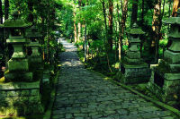
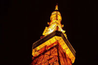
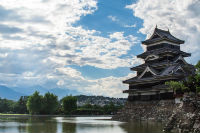
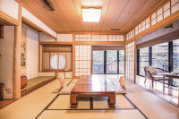

茨城県の観光スポットは見つかりませんでした｡
栃木県の観光スポットは1 件見つかりました｡
西洋の邸宅
西洋の邸宅はとても良い所です。西洋の邸宅はとても良い所です。 西洋の邸宅はとても良い所です。西洋の邸宅はとても良い所です。 西洋の邸宅はとても良い所です。西洋の邸宅はとても良い所です。 西洋の邸宅はとても良い所です。西洋の邸宅はとても良い所です。群馬県の観光スポットは1件見つかりました｡

赤い門
赤い門はとても良い所です。赤い門はとても良い所です。 赤い門はとても良い所です。赤い門はとても良い所です。 赤い門はとても良い所です。赤い門はとても良い所です。 赤い門はとても良い所です。赤い門はとても良い所です。埼玉県の観光スポットは見つかりませんでした｡
千葉県の観光スポットは見つかりませんでした｡
東京都の観光スポットは3件見つかりました｡

緑の階段
緑の階段はとても良い所です。緑の階段はとても良い所です。 緑の階段はとても良い所です。緑の階段はとても良い所です。 緑の階段はとても良い所です。緑の階段はとても良い所です。 緑の階段はとても良い所です。緑の階段はとても良い所です。雷門
雷門はとても良い所です。雷門はとても良い所です。雷門はとても良い所です。 雷門はとても良い所です。雷門はとても良い所です。雷門はとても良い所です。 雷門はとても良い所です。雷門はとても良い所です。

東京タワー
東京タワーはとても良い所です。東京タワーはとても良い所です。 東京タワーはとても良い所です。東京タワーはとても良い所です。 東京タワーはとても良い所です。東京タワーはとても良い所です。 東京タワーはとても良い所です。東京タワーはとても良い所です｡
神奈川県の観光スポットは2件見つかりました｡

日本の城
日本の城はとても良い所です。日本の城はとても良い所です。 日本の城はとても良い所です。日本の城はとても良い所です。 日本の城はとても良い所です。日本の城はとても良い所です。 日本の城はとても良い所です。日本の城はとても良い所です。
